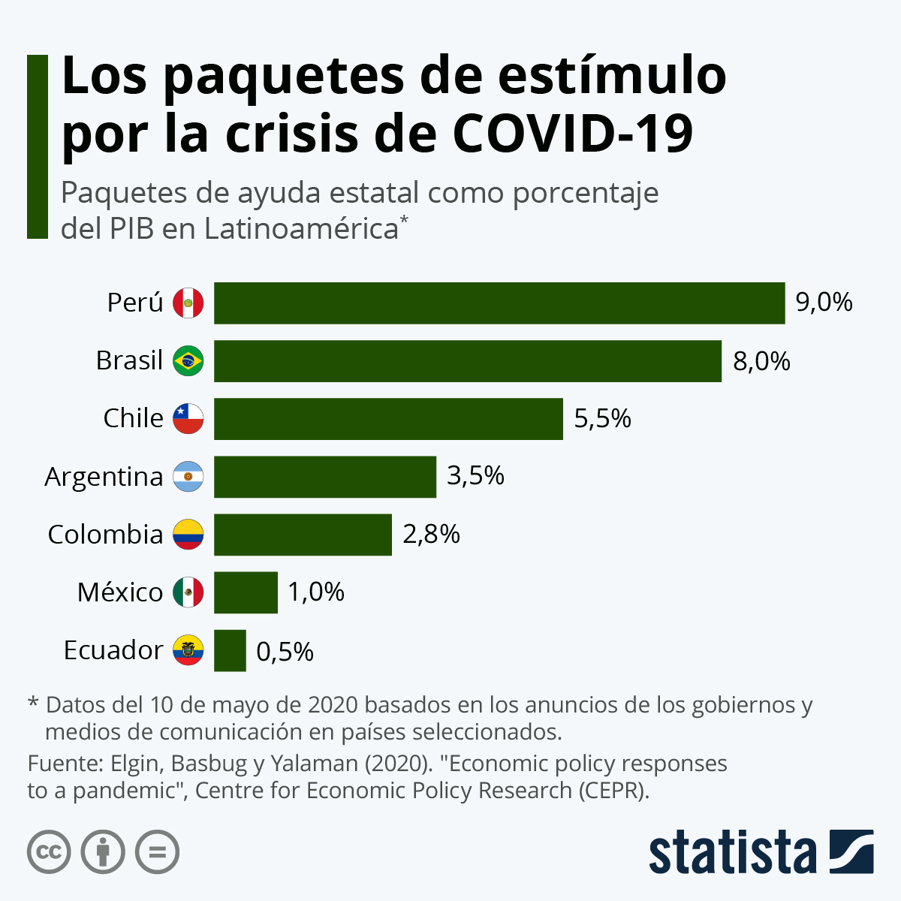
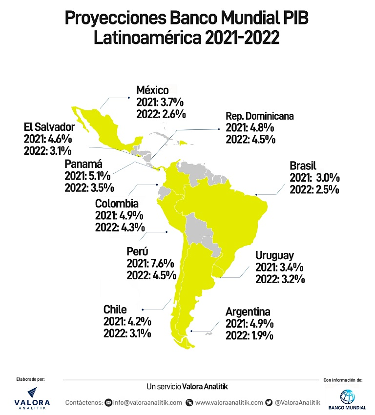

Economia en LatinoaméricaLa pandemia de covid-19 se ha saldado con una caída del 8,1% del PIB en América Latina, superando el impacto de la crisis en la Unión Europea y de otras economías emergentes.
|
 |
El impacto sobre los sectores económicossubir
La pandemia habrá ocasionado el cierre del 2,7 millones de empresas latinoamericanas, es decir el 19% del total de las empresas.
Pero las medidas de distanciamiento social y las limitaciones a la movilidad han afectado de forma desigual a las actividades económicas.
|
 |
|
En 2020 el cierre de las actividades económicas no esenciales se tradujo en destrucción de empleo, particularmente en los meses de marzo, abril y mayo.
Sin embargo, en la gran mayoría de los países se establecieron mecanismos para mantener las relaciones laborales.
Los ERTE (Expediente Temporal de Regulación de Empleo) latinoamericanos han salvado muchos puestos de trabajo. Aunque también se incrementó el número de personas desanimadas, que son aquellas que dejan de buscar empleo porque saben que no lo van a encontrar.
|
|
El cierre de actividades económicas, la destrucción de empleo y la reducción del comercio, la inversión y las remesas, tienen su reflejo en el incremento de la desigualdad y la pobreza.
|
29 de septiembre, 2021 — La OPS anuncia un acuerdo para adquirir 8.5 millones de dosis de Sinovac antes de fin de año y 80 millones en 2022. Países en América Latina podrán adquirir dosis de la organización regional de salud.
27 de septiembre — Estados Unidos anuncia nuevas reglas de viaje que permiten la entrada de personas extranjeras inoculadas con vacunas aprobadas. No aceptará Sputnik V ni CanSino, que han sido utilizadas o contratadas para uso en varios países de América Latina.
25 de septiembre — Cuba hace un envío inicial de su vacuna nacional, Abdala, a Vietnam, el primer país en el extranjero en tener un contrato de suministro con la isla comunista. Cuba dice que puede producir 100 millones de dosis anuales de sus tres vacunas viables: Abdala, Soberana 2 y Soberana Plus. Argentina, México y Venezuela han mostrado interés en Abdala, que aún no tiene el reconocimiento de la Organización Mundial de la Salud (OMS).
El 2 de octubre, Nicaragua autoriza dos vacunas cubanas, Abdala y Soberana 2, para uso de emergencia.
21 de septiembre — La OPS selecciona sitios de fabricación en Argentina y Brasil para ser centros regionales para la producción de vacunas ARNm, específicamente Moderna.
20 de septiembre — Un miembro de la delegación de Brasil ante la Asamblea General de la ONU da positivo al Covid. La ONU está pidiendo a todos los asistentes a la conferencia con sede en Nueva York que se vacunen según un sistema de honor. Sin embargo, el Presidente de Brasil, Jair Bolsonaro, programado para dar el primer discurso ante la Asemblea, ha negado que esté vacunado.
14 de septiembre — México concluye su campaña de tres meses para aumentar las tasas de vacunación en 45 comunidades fronterizas. Aproximadamente el 90 por ciento de los adultos en estas comunidades se han vacunado. El gobierno se propuso alinear las tasas de vacunación con las de las comunidades vecinas de EE.UU., con la esperanza de crear condiciones para reabrir la frontera, cerrada a viajes no esenciales desde marzo 2020. Estados Unidos donó dosis de Johnson & Johnson para ayudar a la campaña de vacunación en la frontera.
Sin embargo, el gobierno de Estados Unidos anunció el 20 de septiembre que extenderá las restricciones fronterizas terrestres con México hasta el 21 de octubre.
México también comenzó a vacunar a los hijos de los trabajadores fronterizos, de 12 a 17 años, en el estado de Coahuila. A nivel nacional, a esta fecha, las personas menores de 18 sin comorbilidades no son elegibles para la vacuna en México.
13 de septiembre — El subsecretario de Salud de México le dice a La Jornada que un millón de niños de 12 a 17 años con factores de riesgo serán elegibles para vacunación con la vacuna Pfizer. Esto viene días después que el presidente de México, Andrés Manuel López Obrador, anuncia una investigación sobre las medidas cautelares presentadas por los estados contra la prohibición de vacunar a los niños de 12 a 18 años. Él, junto con el principal funcionario de salud del país centrado en Covid, sostiene que no es científicamente aconsejable administrar dosis a menores de 18 años. Mientras tanto, el 6 de septiembre, Chile aprueba el uso de Sinovac en niños de seis años en adelante.
7 de septiembre — La República Dominicana hace su primera donación regional de vacunas Covid, enviando 101,000 dosis a Honduras y 304,000 dosis a Guatemala. Mientras tanto, México sigue con sus donaciones regionales, enviando 150,000 dosis cada uno a Honduras y Bolivia.
7 de septiembre — Venezuela finalmente recibe su primer envío de dosis de vacunas por medio del programa COVAX apoyado por la OMS, ya que 693,600 dosis de Sinovac llegan al país de las 12 millones que se ordenaron a través del programa de equidad de vacunas. Durante el verano, Venezuela tuvo problemas para realizar su pago de $120 millones a COVAX, ya que su dinero seguía bloqueándose debido a las sanciones. Finalmente completaron el pago el 8 de julio, 2021.
Sin embargo, al día siguiente, COVAX anuncia sus planes de reducir sus expectativas de las entregas de dosis un 25 por ciento en 2021. El objetivo original de COVAX era entregar 280 millones de dosis en 2021.
6 de septiembre — Perú llega a un acuerdo con el gobierno ruso para la construcción de una empresa doméstica para la producción de Sputnik V. La vacuna aún no ha sido distribuida en el país, ni está aprobada.
6 de septiembre — El regulador de salud de Brasil, Anvisa, suspende la distribución de 22 millones de dosis de Sinovac debido a que la vacuna se llena en viales en una base de producción no autorizada. Habrá una suspensión de 90 días mientras Anvisa realiza una investigación.
2 de septiembre — Bolsonaro, firma una ley que permite que se rompan las patentes médicas y de vacunas durante una emergencia médica a discreción del presidente. Sin embargo, Bolsonaro veta la parte de la ley que obliga a los titulares de patentes a transferir tecnología y ayudar a suministrar materias primas para producir sus medicamentos.
29 de agosto — Cuba, que solo ha administrado las vacunas fabricadas en el país, Abdala y Soberana, dice que comenzará a usar la vacuna china de dos dosis, Sinopharm.
Esto pasó después que el gobierno cubano dijo que produciría suficientes vacunas para inocular a la población de la isla y autorizó su Soberana 2 y Soberana Plus para uso de emergencia el 20 de agosto. Cuba también anunció que vacunará a los niños de 2 años en adelante con sus vacunas. Es el primer país del mundo en vacunar a los niños tan pequeños.
26 de agosto — Pfizer-BioNTech anuncia una asociación con la empresa biofarmacéutica brasileña Eurofarma Laboratórios SA para producir 100 millones de dosis de la vacuna de dos dosis Pfizer para su distribución en América Latina. La producción comenzará en 2022.
subir